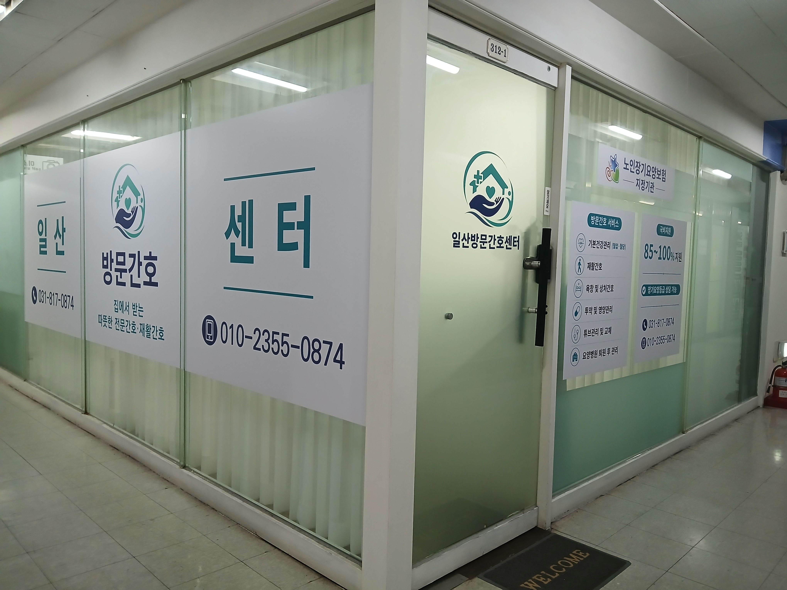
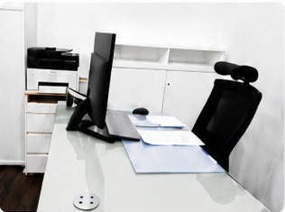
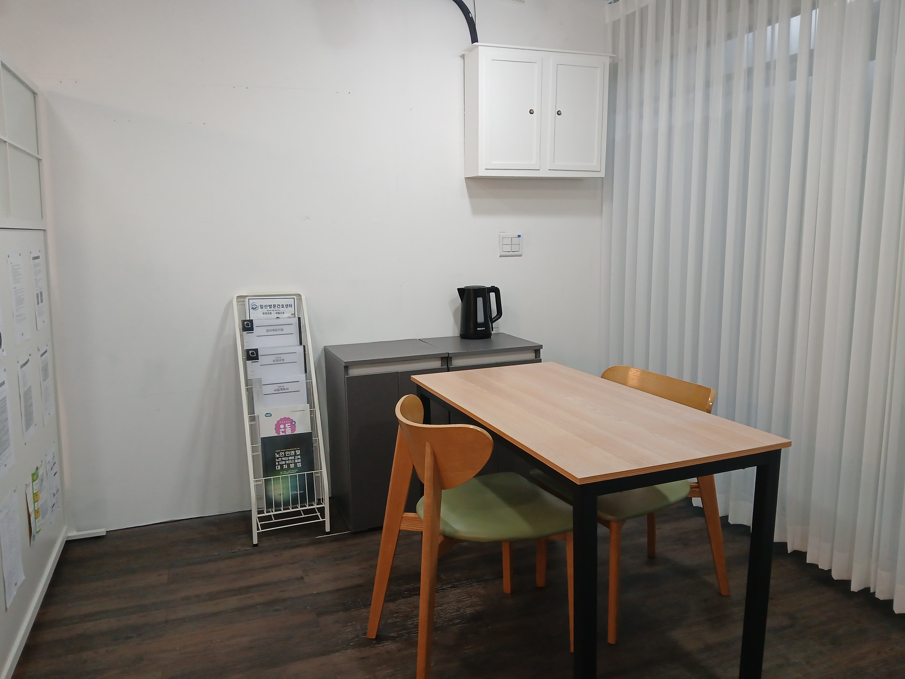
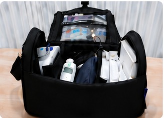

미션 (Mission)
익숙한 가정에서 안전하고 전문적인 방문간호 서비스를 제공하여 어르신의 건강하고 편안한 노후를 돕습니다.
20년 이상의 임상 간호 경험과 고양시 지역 방문간호 경험으로
어르신과 가족에게 전문적이고 따뜻한 서비스를 제공합니다.

저희 일산방문간호센터는 20년 이상의 임상 간호 경험과 고양시 지역 방문간호 경험을 바탕으로 어르신과 가족분들께 전문적이고 따뜻한 방문간호 서비스를 제공하고 있습니다.
어르신이 가장 편안함을 느끼는 가정에서 건강하고 안전한 생활을 이어가실 수 있도록 항상 정성을 다해 찾아가겠습니다.
감사합니다.

방문간호 서비스 운영 및 관리 공간입니다.

방문간호 서비스 준비 및 상담 공간입니다.

방문간호에 필요한 의료장비와 간호용품을 갖추고 어르신 댁으로 직접 방문합니다.
익숙한 가정에서 안전하고 전문적인 방문간호 서비스를 제공하여 어르신의 건강하고 편안한 노후를 돕습니다.
지역사회와 함께하며 어르신과 가족에게 신뢰받는 전문 방문간호센터